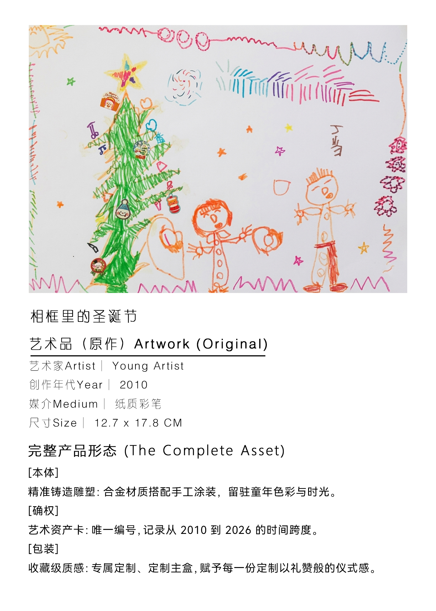
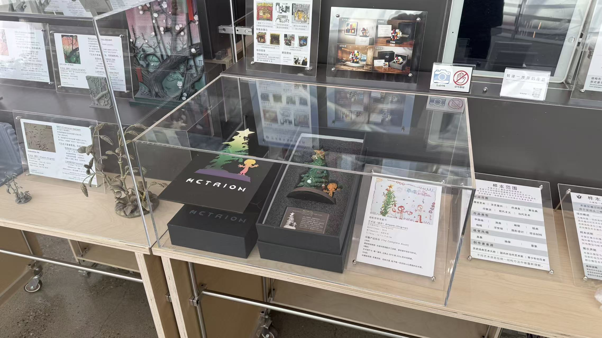
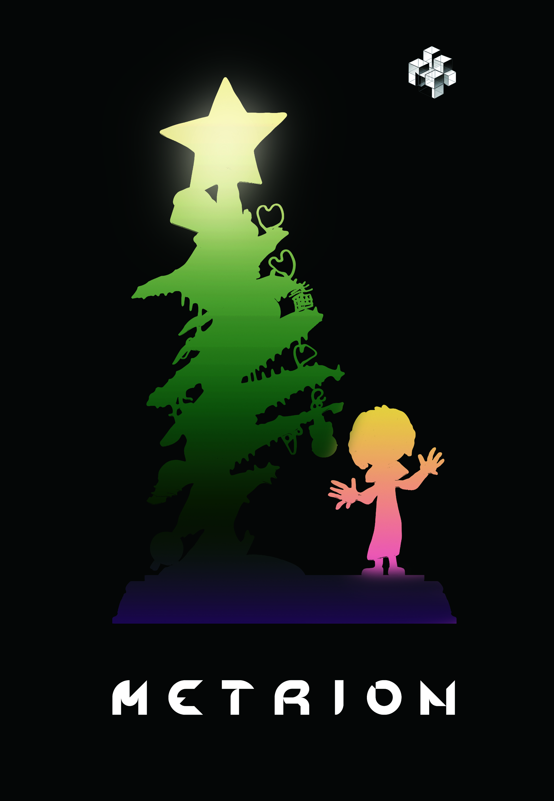

原作信息
原作为青少年艺术家的纸本彩笔绘画《相框里的圣诞节》，作品具有明确的场景叙事、角色关系与节日意象，适合转译为可观看的立体场景。
Case Archive 02
以《相框里的圣诞节》为原作，将纸面彩笔绘画转译为可展示、可包装、可收藏的立体作品，验证青少年创作在教育、家庭纪念与文创礼品场景中的转译价值。





原作为青少年艺术家的纸本彩笔绘画《相框里的圣诞节》，作品具有明确的场景叙事、角色关系与节日意象，适合转译为可观看的立体场景。
转译重点不是机械复制线条，而是保留儿童画中的舞台感、装饰边框、角色位置与色彩关系，将画面里的空间层次重新组织为小型立体结构。
成品可形成涂装模型、展示底座、作品说明卡与包装物料，既能作为家庭纪念物，也能作为机构课程成果展中的重点展示件。
适用于少儿美术机构课程增值、学员作品展、家庭成长档案、节日礼品、机构招生展示，以及青少年创作者早期作品的立体化保存。
原作版权归创作者或其监护人所有。机构合作时，需要明确作品提交、展示、制作、宣传与复制的授权边界。
初期建议以非公开商业化的课程成果、纪念模型和展示样本为主；如进入销售、批量复制或礼品化流通，需要另行签署授权与分成协议。